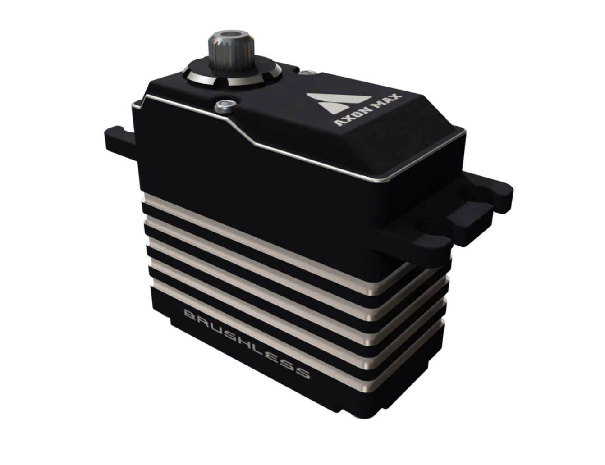

Моторы и Сервоприводы в FTC
Выбор правильных моторов и сервоприводов критически важен для создания эффективного робота FTC. DC моторы обеспечивают вращательное движение для привода, подъемных механизмов и интейков, в то время как сервоприводы позволяют точно позиционировать элементы, например, клешни или манипуляторы. Рассмотрим основные типы моторов и сервоприводов, используемых в FTC, и их применение.
1. DC Моторы
DC моторы являются основными рабочими лошадками в роботе FTC. Они обеспечивают непрерывное вращение и используются для выполнения большинства задач, требующих движения. Важно учитывать крутящий момент, скорость и точность мотора при выборе для конкретного применения.
REV HD Hex Motor
Универсальный мотор, часто используемый начинающими командами для привода колес.
Плюсы:
- Передачи удобно меняются
- Можно устанавливать как параллельно, так и перпендикулярно благодаря Gearbox’у на 90 градусов
- Есть в REV Starter Kit
Минусы:
- Имеет больше люфта, чем goBILDA Yellow Jacket Motor.
REV Core Hex Motor
Распространен для лифта у начинающих команд.
Плюсы:
- Компактный
- Имеет достаточно крутящего момента для большинства задач
- Есть в REV Starter Kit
Минусы:
- Неточный
- На него нельзя установить передачи от HD Hex мотора.
Gobilda Yellow Jacket Motors
Распространен среди более опытных команд.
Плюсы:
- Самые точные
Минусы:
- Несъемная ось
- Тяжело менять передачи
- Стоит дороже, чем HD Hex
2. Сервоприводы
Сервоприводы используются для точного позиционирования и управления углом поворота. Они идеально подходят для задач, где требуется высокая точность, таких как управление клешней, поворот камеры или активация замков. Существует два основных типа сервоприводов:
- Обычные сервоприводы — обеспечивают вращение в пределах 180 градусов.
- Континуальные сервоприводы — могут вращаться на 360 градусов или более, что делает их похожими на DC моторы (часто используются для интейков).
Популярные модели сервоприводов:
- REV Smart Servo — программируемый сервопривод, который позволяет задавать точные углы вращения.
- Gobilda Servo Torque/Speed/Super speed — похож на REV, но можно выбирать скорость.
- AXON Micro/Mini/Max — Мощные и дорогие сервоприводы (аналог - AFRC).

Основные параметры сервоприводов:
- Крутящий момент — важен для удержания или перемещения тяжелых объектов (рука обычно тяжелая из-за ее длины).
- Угол поворота — определяет, насколько сервопривод может повернуться от начального положения.
- Скорость — время, за которое сервопривод совершает полный поворот.
Советы по использованию сервоприводов:
- Используйте Servo Hub или Servo Power Module: Они нужны, чтобы повысить скорость и крутящий момент сервоприводов. Они увеличивают напряжение с 4.8 Вольт до 6 или 7.4 Вольт. Например, крутящий момент сервопривода goBILDA Torque Servo с Servo Hub увеличивается с 17.2 кг*см до 25.2 кг*см.
- Используйте сервоблоки: сервоприводы очень хрупкие, особенно легко ломается внутренняя ось от боковых нагрузок. Сервоблок берет на себя боковую нагрузку, защищая ось сервопривода.
Выбор моторов для разных задач
Правильный выбор мотора или сервопривода зависит от конкретной задачи, которую необходимо решить. Рассмотрим несколько типичных сценариев и рекомендации по выбору:
- Привод колес: Для привода лучше выбирать моторы REV HD Hex с передачей 12:1 и goBILDA Yellow Jacket 435 RPM (для привода лучше выбирать моторы с короткой осью, чтобы сделать компактного робота).
- Подъемные механизмы: Моторы для лифта стоит выбирать в зависимости от веса лифта. Зачастую Core Hex оказывается слишком медленным для лифта, но его можно использовать, если хотите сделать хенг.
- Поднимание/опускание руки: Можно поставить 1 или 2 сервопривода или Core Hex.
- Интейк: Сервоприводы идеальны для клешни, так как они легкие и имеют достаточно крутящего момента. На активном интейке можно использовать континуальные сервоприводы (например goBILDA Speed/Super Speed) или моторы с малым передаточным числом.